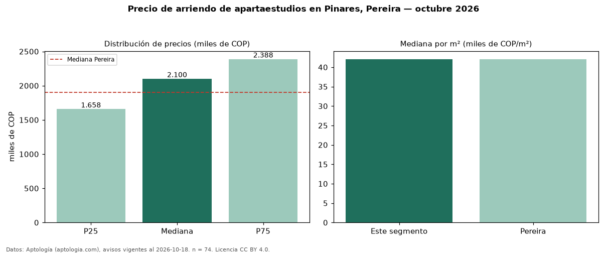

Precio de arriendo de apartaestudios en Pinares, Pereira — octubre 2026
Con 74 avisos vigentes, el canon mediano de apartaestudios en arriendo en Pinares, Pereira es COP 2,10 millones al mes. Frente a la mediana de Pereira para apartaestudios (COP 1,90 millones), queda 11 % por encima. Por metro cuadrado, la mediana es COP 42.000/m² al mes (n = 74 avisos con área), 0 % por debajo de Pereira (COP 42.078/m²). Con el precio por m² de venta del mismo segmento (COP 6,85 millones/m²), la rentabilidad bruta implícita es 7,4 % anual (aproximación con medianas de ofertas distintas). El área mediana anunciada es 49 m². La administración mediana declarada es COP 300.000 al mes (n = 49), aparte del canon. El estrato más frecuente es 6 (90 % de los avisos con estrato). La mitad central de los avisos va de COP 1,66 millones a COP 2,39 millones (razón 1,4), una dispersión moderada. Datos: Aptología (aptologia.com), CC BY 4.0 — https://www.aptologia.com/apartaestudios/pereira/pinares. Archivos: PDF, CSV con las cifras y gráfica PNG.

| Avisos únicos | 74 |
|---|---|
| Percentil 25 | COP 1.657.500 |
| Mediana | COP 2.100.000 |
| Percentil 75 | COP 2.387.500 |
| Mediana por m² | COP 42.000 |
Fuente: avisos vigentes de portales inmobiliarios recopilados por Aptología, deduplicados (mínimo 30 avisos únicos por celda). Precios pedidos, no cerrados. Fecha: 2026-10-18.